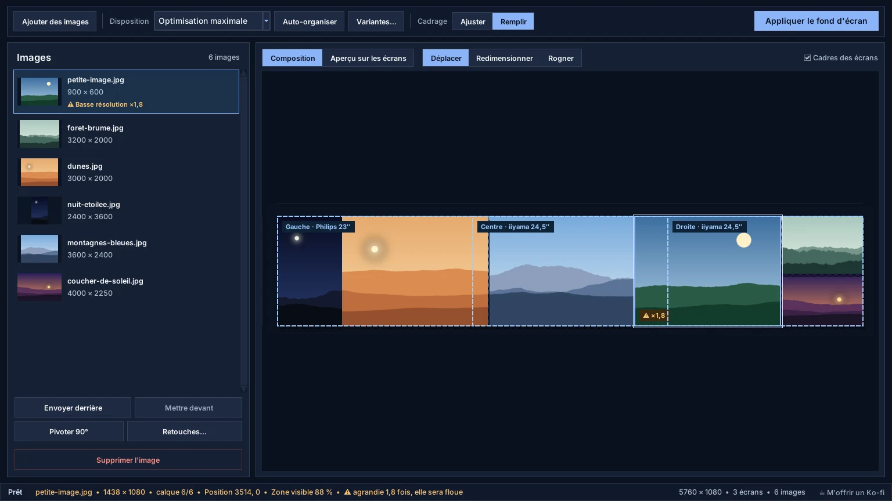
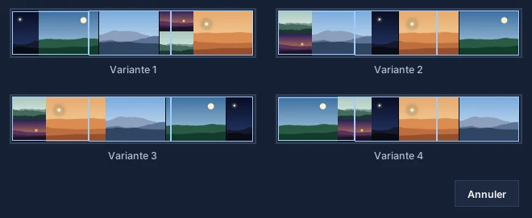
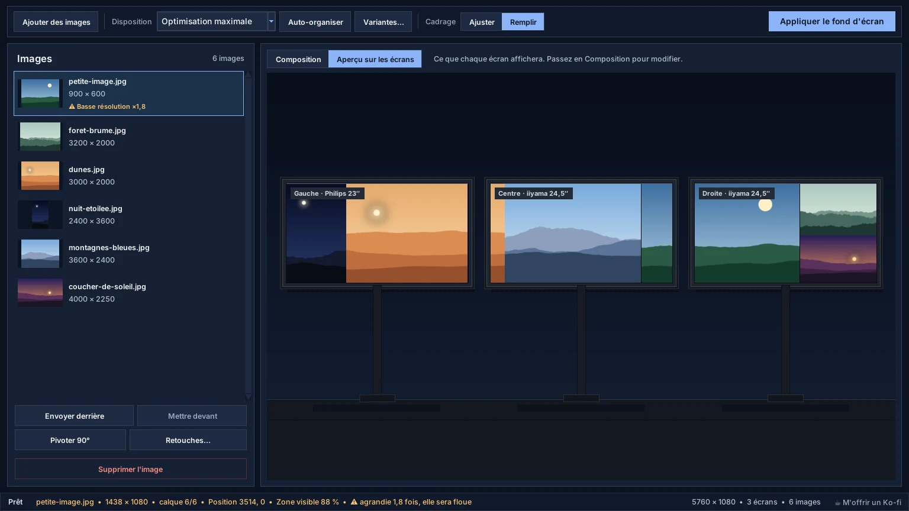
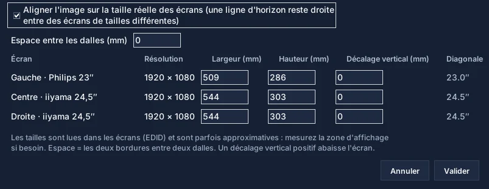
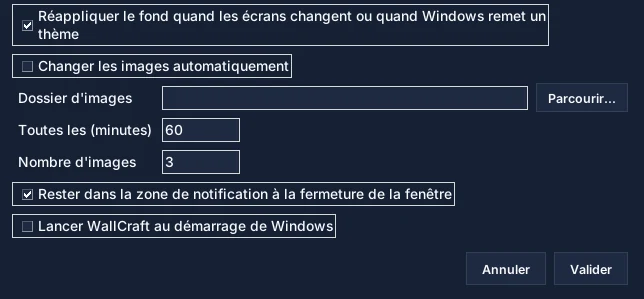

Ajouter des images
Bouton « Ajouter des images » ou glisser-déposer. Les photos de téléphone sont remises à l'endroit.
Tout ce qu'il faut pour composer un fond sur plusieurs écrans : la fenêtre, les outils, les réglages et les solutions aux problèmes courants.
Allez directement à la partie qui vous intéresse.
Un premier fond en deux minutes.
Bouton « Ajouter des images » ou glisser-déposer. Les photos de téléphone sont remises à l'endroit.
Six dispositions, dont l'optimisation maximale. Variantes… propose quatre autres arrangements.
Ajuster garde chaque image entière ; Remplir couvre les écrans en recadrant autour des visages.
Déplacer, Redimensionner, Rogner, calques, rotation et retouches. Ctrl+Z annule.
« Appliquer le fond d'écran » découpe la composition et l'applique écran par écran.
Quatre zones, de haut en bas et de gauche à droite.
La barre d'outils regroupe ce qui sert tout le temps ; le reste est dans les menus Fichier, Image, Écrans et Langue.

Choisissez-en une dans la liste Disposition, puis Auto-organiser.
Découpe l'espace en cases de tailles variées. Avec une image par écran, chaque image va sur son écran.
Des rangées de même hauteur sur toute la largeur, comme une galerie photo.
Des cases identiques, idéal pour des images de même format.
Une colonne par image, pratique pour des portraits.
Une rangée par image, pour des panoramas.
Essaie des milliers d'arrangements et garde celui qui perd le moins de place. Recommandé.
Deux façons de faire tenir les images dans leurs cases.
Ajuster montre chaque image entière, sans la déformer : il peut rester des bandes vides.
Remplir couvre tout l'espace : chaque image est recadrée autour des visages détectés, ou de sa zone la plus détaillée.
Sélectionnez une image puis choisissez un outil au-dessus de la zone de travail.
Déplacer : faites glisser l'image ; elle s'aimante aux bords de la composition et des autres images (Maj pour désactiver l'aimantation).
Redimensionner : tirez un coin, les proportions sont conservées.
Rogner : tirez les poignées pour choisir la partie visible de l'image.
Quatre autres arrangements de la disposition choisie, côte à côte.
Cliquez sur Variantes…, puis sur la miniature qui vous plaît : elle remplace la composition actuelle.

Ce que chaque écran affichera, avant d'appliquer.
L'onglet Aperçu dessine vos écrans comme sur le bureau, avec leur nom : « Gauche · Philips 23″ », « Centre · iiyama 24,5″ »…

Pour qu'une ligne reste droite entre des écrans de tailles différentes.
Menu Écrans › Taille réelle des écrans… Cochez la case : WallCraft place les écrans selon leur taille physique, lue dans l'écran (EDID).

WallCraft peut garder votre fond et le changer pour vous.
Menu Écrans › Fond automatique… WallCraft mémorise un fond par configuration d'écrans (portable seul, sur sa station…).

Les plus utiles.
Les problèmes les plus fréquents.
Elle est agrandie au-delà de sa taille : l'alerte « Basse résolution » l'indique. Utilisez une image plus grande, réduisez-la ou passez en Ajuster.
WallCraft applique une image par écran ; si Windows refuse, il essaie le mode « Étendre » et l'indique. Redétectez les écrans (menu Écrans) puis réessayez.
Activez la taille réelle des écrans et réglez l'espace entre les dalles.
Si le fond automatique est actif, WallCraft réapplique le vôtre dans la minute. Sinon, cliquez sur Appliquer.
La composition se met à jour seule ; WallCraft réapplique le fond mémorisé pour cette configuration s'il en existe un.
WallCraft Pro 2026.11.13 aligne une image sur des écrans de tailles physiques différentes, remplit les écrans en recadrant autour des visages, garde le fond quand vous branchez un portable et fait tourner les images.
Découvrez comment WallCraft Pro importe les images, les redimensionne, gère l'ordre des calques, prévisualise le rendu multi-écrans et applique le fond sous Windows.
Consultez la FAQ WallCraft Pro sur le rognage, les écrans de tailles différentes, le support Windows, l'export découpé, l'open source et l'état du téléchargement.
Télécharge le build actuel, teste ta configuration multi-écrans et garde le dépôt GitHub sous la main pour les mises à jour et le code source.